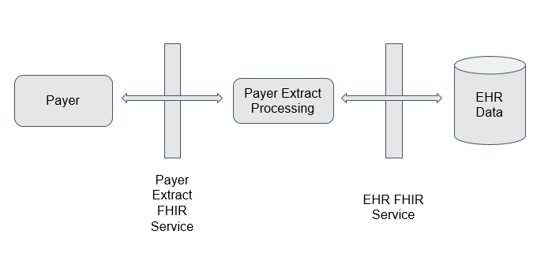

Calculating payer-relation quality measures is a key component of value-based care. A critical aspect of calculating these measures is accessing or obtaining the patient information involved in the calculations. The availability of secure, RESTful, standards-based services - Fast Healthcare Interoperability Resources (FHIR) - for accessing patient information provides opportunities to streamline this process. Combining this functionality with the emerging capability of shareable knowledge artifacts enables an approach to gathering patient information that can significantly reduce the amount of engineering effort required to implement and maintain quality measure calculations that payers can use. In addition, healthcare providers benefit from the reduced effort required to respond to quality reporting requests.
The Clinical Reasoning module of the FHIR specification defines resources and operations to support the definition and delivery of decision support and quality measurement content. In particular, the Quality Reporting topic describes the use of the Measure and MeasureReport resources to define quality measures and report measurement results, including the patient information involved in performing the calculations.
By focusing on the data requirements involved in the calculation of payer quality measures, we can define what are effectively cohort definitions for each measure of interest and use the quality reporting mechanism defined in the Clinical Reasoning module to retrieve the patient information required to support a full calculation of the measure.
The following diagram illustrates the approach:
The measure processing component is responsible for turning CQL-based measure definitions into FHIR requests against the EHRs. This functionality can be built independent of the content of the measures, so it only has to be developed one time; any measure written in CQL can be evaluated in this way.
This guide focuses on cohort definitions to support the following six payer measures:
| Measure | Description |
|---|---|
| BCS | Breast Cancer Screening |
| CBP | Controlling High Blood Pressure |
| CCS | Cervical Cancer Screening |
| CDC | Comprehensive Diabetes Care |
| COL | Colorectal Cancer Screening |
| ABA | Adult BMI Assessment |
To facilitate testing and verification, this guide includes test bundles for the Colorectal Cancer Screening and the Controlling Blood Pressure measures:
| Bundle | Description |
|---|
The following resources formalize the description of the logic and behavior defined by this implementation guide.
| Resource | Type | Description |
|---|---|---|
| Breast Cancer Screening Library | Library | Defines the cohort and data requirements to support calculation of a Breast Cancer Screening payer quality measure |
| Breast Cancer Screening Measure | Measure | Defines the measure structure and cohort definition for a Breast Cancer Screening payer quality measure |
| Breast Cancer Screening (ELM) | ELM Source | For reference, the complete ELM content of the Breast Cancer Screening library |
| Breast Cancer Screening CQL | CQL Source | For reference, the complete CQL content of the Breast Cancer Screening library |
| Controlling High Blood Pressure Library | Library | Defines the cohort and data requirements to support calculation of a Controlling High Blood Pressure payer quality measure |
| Controlling High Blood Pressure Measure | Measure | Defines the measure structure and cohort definition for a Controlling High Blood Pressure payer quality measure |
| Controlling High Blood Pressure (ELM) | ELM Source | For reference, the complete ELM content of the Controlling High Blood Pressure library |
| Controlling High Blood Pressure CQL | CQL Source | For reference, the complete CQL content of the Controlling High Blood Pressure library |
| Cervical Cancer Screening Library | Library | Defines the cohort and data requirements to support calculation of a Cervical Cancer Screening payer quality measure |
| Cervical Cancer Screening Measure | Measure | Defines the measure structure and cohort definition for a Cervical Cancer Screening payer quality measure |
| Cervical Cancer Screening (ELM) | ELM Source | For reference, the complete ELM content of the Cervical Cancer Screening library |
| Cervical Cancer Screening CQL | CQL Source | For reference, the complete CQL content of the Cervical Cancer Screening library |
| Comprehensive Diabetes Care Library | Library | Defines the cohort and data requirements to support calculation of a Comprehensive Diabetes Care payer quality measure |
| Comprehensive Diabetes Care Measure | Measure | Defines the measure structure and cohort definition for a Comprehensive Diabetes Care payer quality measure |
| Comprehensive Diabetes Care (ELM) | ELM Source | For reference, the complete ELM content of the Comprehensive Diabetes Care library |
| Comprehensive Diabetes Care CQL | CQL Source | For reference, the complete CQL content of the Comprehensive Diabetes Care library |
| Colorectal Cancer Screening Library | Library | Defines the cohort and data requirements to support calculation of a Colorectal Cancer Screening payer quality measure |
| Colorectal Cancer Screening Measure | Measure | Defines the measure structure and cohort definition for a Colorectal Cancer Screening payer quality measure |
| Colorectal Cancer Screening (ELM) | ELM Source | For reference, the complete ELM content of the Colorectal Cancer Screening library |
| Colorectal Cancer Screening CQL | CQL Source | For reference, the complete CQL content of the Colorectal Cancer Screening library |
| Adult BMI Assessment Library | Library | Defines the cohort and data requirements to support calculation of an Adult BMI Assessment payer quality measure |
| Adult BMI Assessment Measure | Measure | Defines the measure structure and cohort definition for an Adult BMI Assessment payer quality measure |
| Adult BMI Assessment (ELM) | ELM Source | For reference, the complete ELM content of the Adult BMI Assessment library |
| Adult BMI Assessment CQL | CQL Source | For reference, the complete CQL content of the Adult BMI Assessment library |